manifesto / 01
하나의 장르에 안주하지 않는 대신,
하나의 정서를 끝까지 밀어붙인다.
강리온의 작품은 회화에서 시작해 사운드로 번지고, 렌즈를 거쳐 금속과 종이로 응결된다. 매체가 바뀌어도 질문은 하나다. “빛은 어떻게 구조가 되는가?”
manifesto / 01
강리온의 작품은 회화에서 시작해 사운드로 번지고, 렌즈를 거쳐 금속과 종이로 응결된다. 매체가 바뀌어도 질문은 하나다. “빛은 어떻게 구조가 되는가?”
“나는 이미지를 그리지 않는다.
이미지가 되기 직전의 긴장을 설계한다.”
section 01
강리온은 예술가이자 발명가, 작곡가이자 소설가인 “세계관 단위 캐릭터”로 기획되었다.
서울과 부산, 그리고 특정되지 않은 미래 도시를 오가며 활동하는 것으로 설정된 인물. 그의 아틀리에는 캔버스, 타자기, 낡은 카메라, 황동 장치, 필드 레코더가 한 공간에 뒤엉킨 실험실에 가깝다.
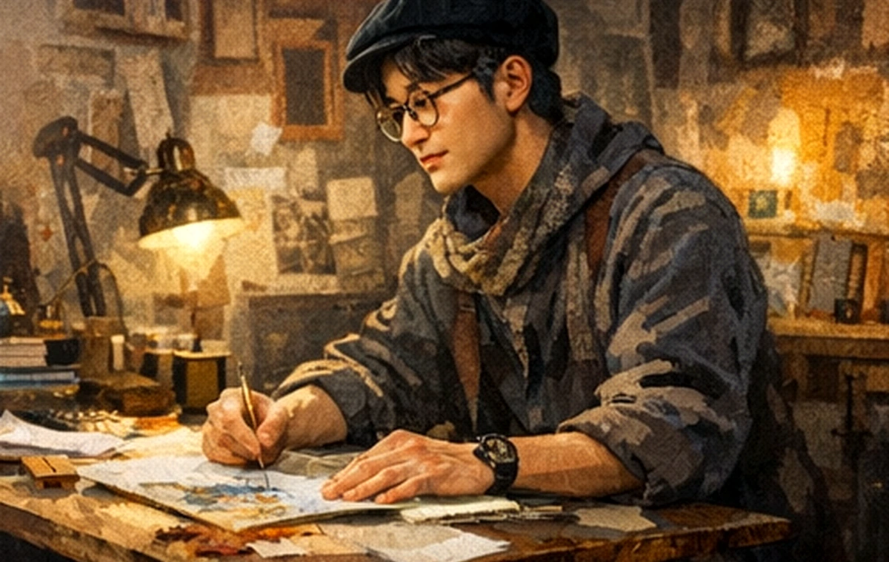
폐카메라와 유화용 붓, 필드 레코더를 한 테이블에 올려놓고 첫 실험을 시작했다.
도시의 소음 패턴을 금속 형태로 번역하는 오브제 시리즈를 발표했다는 설정.
사진, 조형, 소설을 하나의 내러티브로 엮는 개인 프로젝트의 축이 완성된다.
이번 페이지는 그 세계관을 하나의 정적 웹 포트폴리오로 압축한 결과물이다.
section 02
각 분야는 독립적으로 보이지만, 실제로는 하나의 감정 지도를 서로 다른 재료로 번역한 결과다.
빛의 확산과 잔향을 물감의 질감으로 기록한다.
필드 레코딩과 기타 루프를 조합해 회화의 색채를 청각으로 환원한다.
흐릿한 도시, 오래된 렌즈, 유리 반사로 “남은 빛”을 채집한다.
기계의 표정과 악기의 구조를 결합한 황동 장치를 설계한다.
과정 자체를 하나의 공연처럼 연출하고, 장면의 리듬을 기록한다.
발명의 배경 서사와 작품의 정서를 시, 산문, 장편의 형태로 확장한다.
section 03
필터 버튼을 눌러 매체별 대표작을 살펴보고, 각 카드에서 상세 캡션을 열 수 있다.
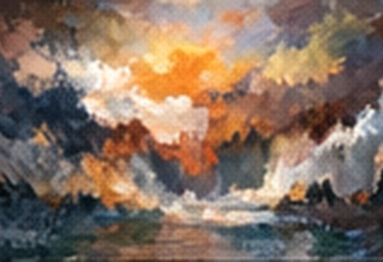
폭풍, 수면, 발광하는 잔향의 회화.
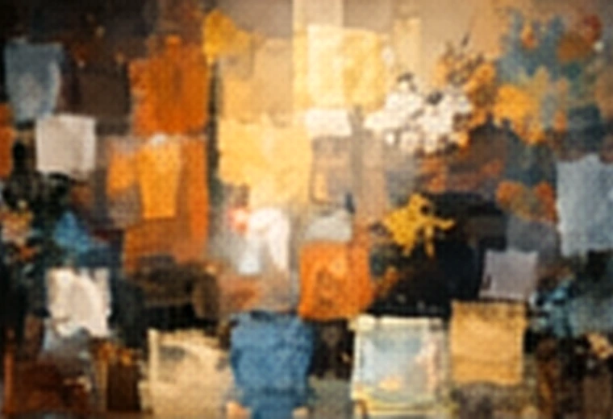
도시를 색면과 리듬으로 분해한 추상.
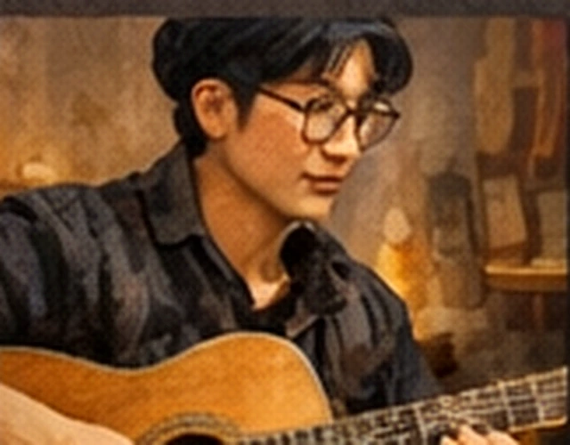
공방의 소음을 서정적인 루프로 엮은 앨범.
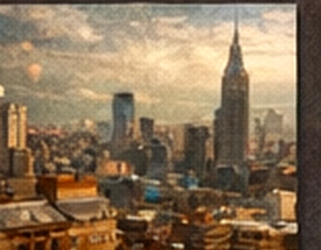
도시의 윤곽보다 공기를 찍는 사진.
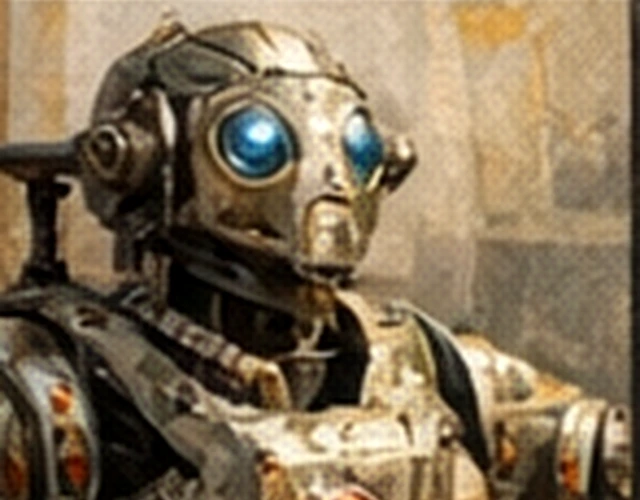
기계의 얼굴을 가진 기억 저장 장치.
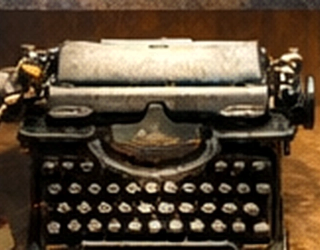
메모와 기계음으로 쓴 산문집.
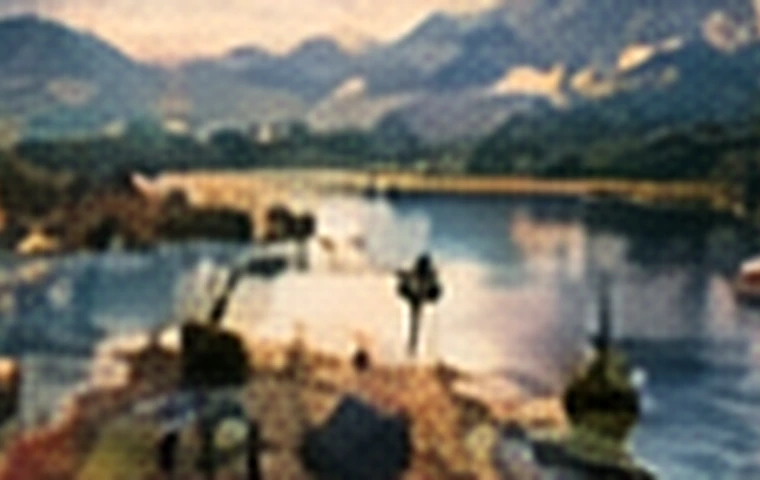
움직이지 않는 풍경의 박자를 수집한 기록.
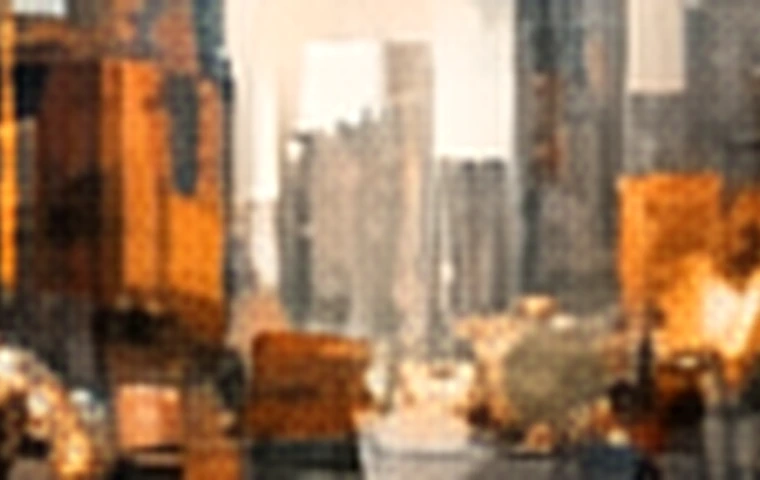
도시의 열기를 잔상처럼 남기는 영상 산문.
과정을 하나의 공연으로 편집한 짧은 필름.
section 04
강리온은 완성작보다 “매체가 서로 번역되는 순간”을 가장 중요하게 다룬다.
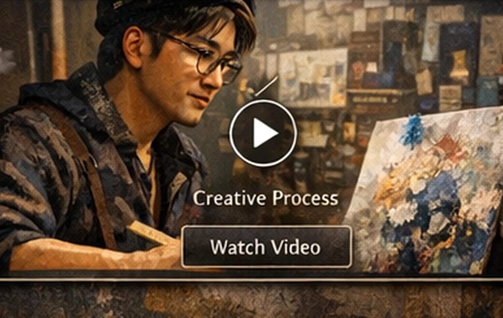
phase 01
형태보다 리듬, 정확도보다 압력. 회화는 리온에게 언제나 가장 먼저 감정을 붙잡는 도구다.
phase 02
짧은 문장, 회로도, 악보 파편이 한 장 위에서 섞이기 시작하면 작품의 방향이 정해진다.
studio recipe
section 05
예술 작품과 장치 사이의 경계가 가장 흐려지는 구간. 리온의 조형 발명은 언제나 기능보다 분위기를 먼저 설계한다.
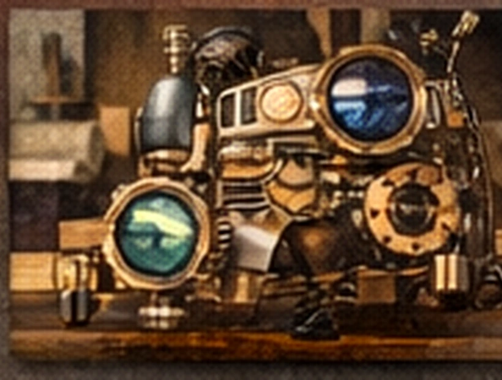
prototype 01
도시의 빛 변화를 색채 진동으로 바꿔 보여주는 휴대형 광학 장치.
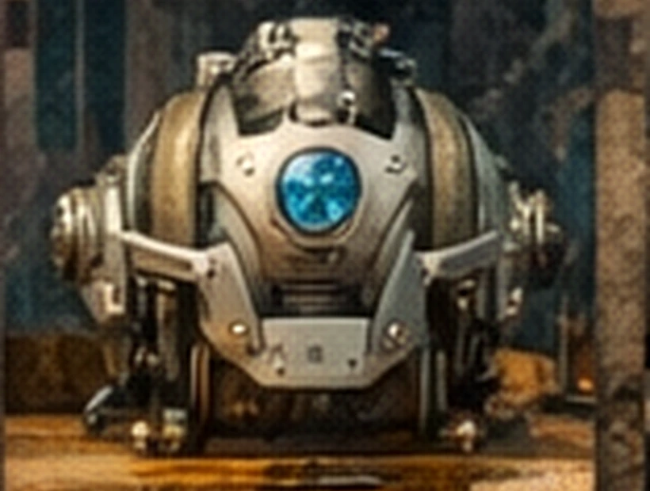
prototype 02
공방의 기계음을 저주파 드론 사운드로 변조하는 구형 사운드 오브제.
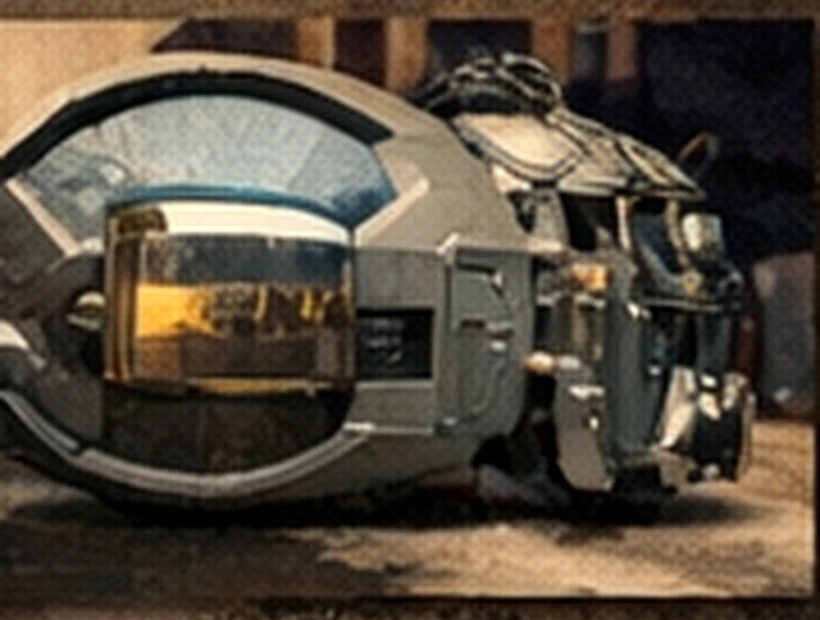
prototype 03
빛과 그림자의 주기를 퍼포먼스 세트처럼 연출하는 이동형 프레임 머신.
section 06
가상의 이력 역시 ‘이 인물이 실제로 살았을 것 같은 밀도’를 만들기 위해 구체적으로 설계했다.
조형 장치 5점을 소개하며 “기계의 표정”이라는 키워드를 처음 제시한다.
도시 야경 사진과 산문을 결합한 개인 아카이브를 발표한다.
조형, 사운드, 회화, 퍼포먼스를 하나의 동선으로 구성한 실험 전시.
장르 융합과 내러티브 설계 부문을 수상했다는 설정으로 캐릭터의 밀도를 완성한다.
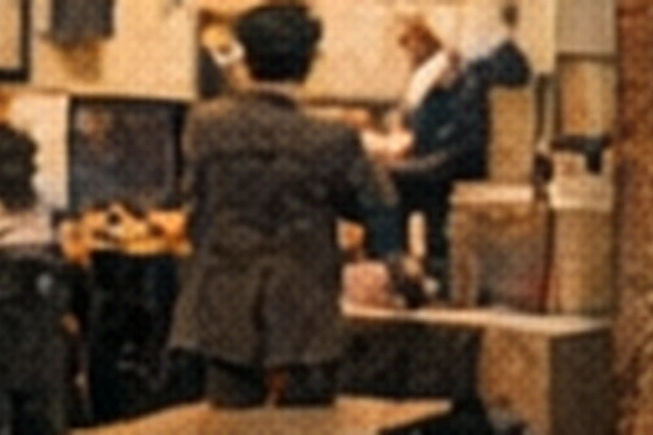
gallery
오브제와 회화, 사진을 한 동선 위에 배치하는 전시 문법.
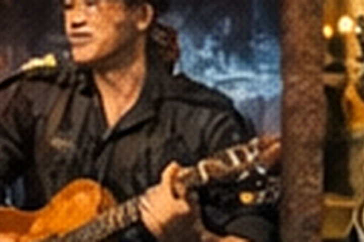
performance
사운드 작업을 갤러리 퍼포먼스로 확장하는 라이브 세션.
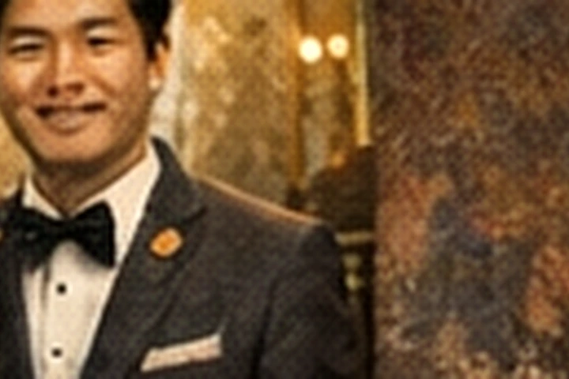
award
이 인물이 단순 설정을 넘어 실재감 있는 포트폴리오 주체처럼 보이게 하는 장면.
section 07
리온의 마지막 매체는 늘 문장이다. 이미지와 장치를 만든 뒤, 그는 그것을 다시 텍스트로 봉인한다.
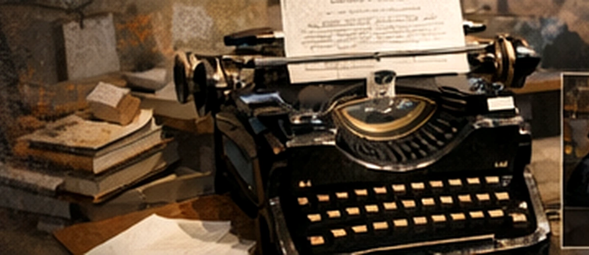
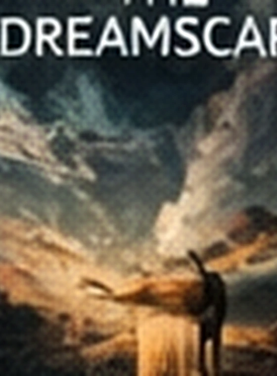
novel 01
빛을 수집하는 도시에 관한 장편. 사진 연작의 정서를 서사로 확장한 소설.
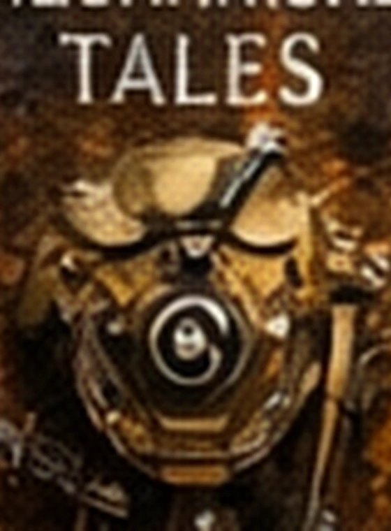
novel 02
기억을 저장하는 장치와 그것을 돌보는 사람들의 짧은 연작 소설집.
selected outputs
section 08
이 페이지는 가상 캐릭터의 포트폴리오 데모이지만, 아래 폼은 정적 사이트 환경에서도 동작하도록 문의 내용을 클립보드에 복사하는 방식으로 구성했다.
전시 비주얼, 세계관형 아티스트 브랜딩, 가상 인물 IP, 인터랙티브 포트폴리오
정적 데모 / 클립보드 복사 / 로컬 실행 가능 / 커스텀 수정 용이